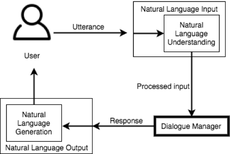

Conversational interfaces (CI) contain three main components.
In most speech based conversational interfaces such as virtual assistants, the natural language input and output are executed using speech recognition and speech synthesis. In the case of text based conversational interfaces such as chatbots, the input is given by the user in text using natural language, and the output is generated by the system in natural language text.
The diagram above shows the components of a CI system.
The natural language input component takes the user input and passes it onto the dialogue manager. The dialogue manager processes the input, and generates a suitable response. This response is passed to the natural language output component, which is then provided to the user.
Although there are many resources available for natural language input (speech recognition), and natural language output (speech synthesis), dialogue management is a relatively complex process of which few systems have been implemented.
The task of the Natural Language Understanding (NLU) component is understanding the context of the user's utterance. Many modern applications such as Dialogflow (formerly known as API.ai), IBM Watson Conversation, Microsoft Luis, Alexa Skills Kit, etc. enabling the development of CI applications follow an Intent Classification model for NLU.
The intent classification model is utilized to identify the intention of the user when an utterance is made. Conversations are designed for each possible intent. Thereafter, whenever the intent is identified from an utterance, the conversation is carried out in the designed approach until the user’s goal is achieved.
Cuneiform mainly focuses on the Dialogue Manager component of conversational interfaces.
Taking into account the components, and modern approaches to CI systems, the architecture for Cuneiform has been designed as shown below.
Each component of this architecture will be described using an example of a conversational application for an online retail store, which interacts with its customers through a virtual assistant application. There are three main actors in this scenario.
When the Cuneiform application starts, the three main components in the system Responder, Classifier, and Dialogue Manager run as three individual processes, where each process is connected with each other through socket connections.
The user interface is the method in which an end user will be interacting with the application. If the application is plugged into a Facebook Messenger bot, then the interface would be the messaging interface on Facebook. If plugged into a virtual assistant such as an Amazon Alexa, the interface would be the Amazon Echo device.
The responder acts as the interface between the system's main routines and the user. The tasks of the responder are transferring data from the user to the classifier, and controlling the input and output.
In our online retail store example, the customer speaks to a VA (user interface), and requests for information. This spoken utterance is converted into text (using speech recognition), and then provided to the responder. The responder then transfers the text to the classifier.
The Classifier's functions are: filtering, and normalizing the input, segmenting the input entered by the user into logical components, classifying the intent of the user from the input, and transferring the intent classification details to the Dialogue Manager. Comprehending the user intent with high confidence is key to the effectiveness of this system.
For example, the user may say something similar to “I want to order bread”, or “I am out of bread”, for which the system should understand that the user wants to order something, and what he/she wants to order is bread. It is the task of the developer to design the system such that the user intents can be identified appropriately.
The classifier has two sub-components:
In order to train the intent classifier, the developer must provide some sample utterances for an intent. The intent processor goes though these samples, and organizes them into logical components, with the rest of the intents.
The task of the intent classifier is to get any utterances made by the user (such as "I am out of bread"), and try to identify the user's intention.
The dialogue manager contains the core of the system. The developer designs the conversation flow for each intent. This design follows a graph data structure, which is represented by the Cuneiform programming language. The Cuneiform script is interpreted by the interpreter. The script contains code with custom syntax for a programming language specifically designed for dialogue management.
For example, if the user wants to order multiple items, the developer should design the conversation flow such that the system prompts the user for details such as the item name, brand (if required), quantity, etc. for each item. After the user has finished ordering, the system would take the set of data of the items ordered, generate an output to be read to the user, asking for confirmation.
The next section discusses the implementation details of the responder component of the system.